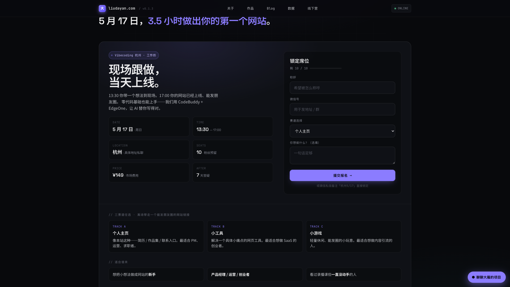

<template id="beat-5-cta-template">
  <div id="beat-5-cta" data-composition-id="beat-5-cta" data-width="1920" data-height="1080">
    <div class="scene scene-cta">
      <div class="bg-grid"></div>
      <div class="bg-shot">
        
      </div>
      <div class="scene-content">
        <div class="eyebrow t-mono">WORKSHOP / CTA</div>
        <h2 class="headline">3.5 小时，<br />做出你的第一个网站。</h2>
        <p class="copy">这个网站本身，就是一次 vibecoding 的现场示范。下一步，是把你的想法也做出来。</p>
      </div>
      <div class="cta-panel">
        <div class="cta-title">5 月 17 日 · 杭州</div>
        <div class="cta-sub">现场跟做，当天上线。</div>
        <div class="cta-meta t-mono">13:30 — 17:00 / ¥149 / 10 seats</div>
        <div class="cta-button">提交报名 →</div>
      </div>
      <div class="brand-lockup">
        <div class="domain t-mono">liudayan.com</div>
        <div class="tagline">大雁 · vibecoder</div>
      </div>
    </div>
    <style>
      #beat-5-cta {
        width: 100%;
        height: 100%;
        overflow: hidden;
        color: #ededee;
        background: #08090c;
        font-family: "PingFang SC", "Noto Sans SC", sans-serif;
      }
      .scene {
        position: relative;
        width: 100%;
        height: 100%;
        overflow: hidden;
        background:
          radial-gradient(circle at 70% 18%, rgba(139,124,255,0.22), transparent 22%),
          #08090c;
      }
      .bg-grid {
        position: absolute;
        inset: 0;
        background-image:
          linear-gradient(to right, rgba(255,255,255,0.05) 1px, transparent 1px),
          linear-gradient(to bottom, rgba(255,255,255,0.05) 1px, transparent 1px);
        background-size: 64px 64px;
        opacity: 0.22;
      }
      .bg-shot {
        position: absolute;
        inset: 0;
        opacity: 0.2;
      }
      .bg-shot img {
        width: 100%;
        height: 100%;
        object-fit: cover;
        object-position: center top;
      }
      .scene-content {
        position: absolute;
        left: 140px;
        top: 150px;
        width: 720px;
      }
      .t-mono {
        font-family: "JetBrains Mono", "SF Mono", monospace;
        letter-spacing: 0.14em;
      }
      .eyebrow {
        font-size: 16px;
        color: #c8bfff;
        margin-bottom: 18px;
      }
      .headline {
        margin: 0 0 24px;
        font-size: 92px;
        line-height: 0.98;
        font-weight: 700;
      }
      .copy {
        margin: 0;
        font-size: 28px;
        line-height: 1.5;
        color: #b8babf;
      }
      .cta-panel {
        position: absolute;
        right: 140px;
        top: 180px;
        width: 560px;
        padding: 38px;
        border-radius: 28px;
        border: 1px solid rgba(139,124,255,0.28);
        background: rgba(15,17,22,0.88);
        box-shadow: 0 0 0 1px rgba(139,124,255,0.14), 0 20px 80px rgba(139,124,255,0.18);
      }
      .cta-title {
        font-size: 48px;
        font-weight: 700;
        margin-bottom: 8px;
      }
      .cta-sub {
        font-size: 28px;
        color: #ededee;
        margin-bottom: 16px;
      }
      .cta-meta {
        font-size: 15px;
        color: #7c7f8a;
        margin-bottom: 28px;
      }
      .cta-button {
        width: 100%;
        padding: 22px 24px;
        border-radius: 18px;
        text-align: center;
        font-size: 30px;
        font-weight: 700;
        background: linear-gradient(90deg, #7866ef, #8b7cff);
        color: #08090c;
        box-shadow: 0 0 44px rgba(139,124,255,0.42);
      }
      .brand-lockup {
        position: absolute;
        left: 140px;
        bottom: 120px;
      }
      .domain {
        font-size: 18px;
        color: #c8bfff;
        margin-bottom: 10px;
      }
      .tagline {
        font-size: 32px;
        font-weight: 600;
      }
    </style>
    <script src="https://cdn.jsdelivr.net/npm/gsap@3.14.2/dist/gsap.min.js"></script>
    <script>
      window.__timelines = window.__timelines || {};
      const tl = gsap.timeline({ paused: true });
      tl.from(".eyebrow", { y: 16, opacity: 0, duration: 0.42, ease: "power2.out" }, 0.05);
      tl.from(".headline", { y: 40, opacity: 0, duration: 0.75, ease: "power3.out" }, 0.1);
      tl.from(".copy", { y: 22, opacity: 0, duration: 0.55, ease: "power2.out" }, 0.42);
      tl.from(".cta-panel", { x: 80, opacity: 0, duration: 0.8, ease: "power3.out" }, 0.34);
      tl.from(".cta-button", { scale: 0.92, opacity: 0, duration: 0.5, ease: "back.out(1.4)" }, 0.9);
      tl.from(".brand-lockup", { y: 20, opacity: 0, duration: 0.5, ease: "power2.out" }, 1.05);
      tl.to(".cta-button", { boxShadow: "0 0 68px rgba(139,124,255,0.62)", duration: 1.2, repeat: 0, yoyo: true }, 1.25);
      tl.to(".bg-shot", { scale: 1.03, duration: 5.8, ease: "none" }, 0);
      window.__timelines["beat-5-cta"] = tl;
    </script>
  </div>
</template>
